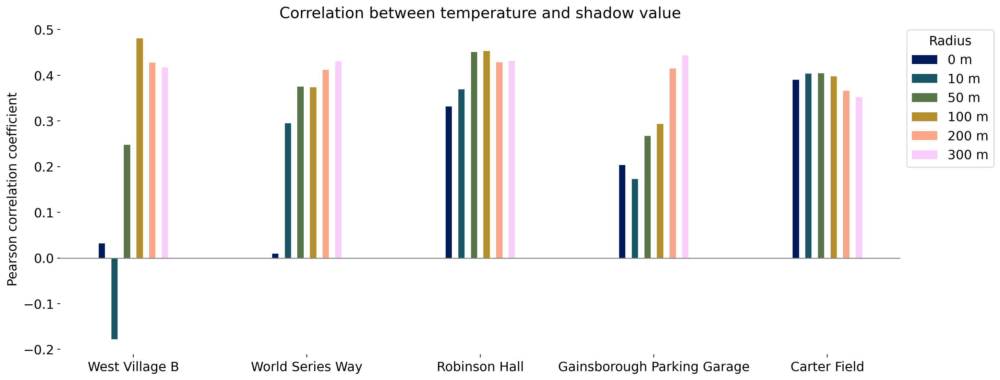

I will export a file obtaining the shadow time series at different radii for each of the 5 sensors.
Opening the geometry data
In this first part, I’ll open the Geojsons for the: 1. Building data. 2. Tree data.
from pathlib import Pathimport geopandas as gpdfrom shapely.geometry import boximport pandas as pdimport cmcrameri.cm as cmcimport matplotlib.pyplot as pltimport numpy as npimport sysfrom rasterio.features import rasterizefrom rasterio.transform import from_origin, rowcolfrom rasterio.plot import show, plotting_extentimport pvlibimport json#Time series importssys.path.append("/Users/legariapena.j/Documents/open-sensing-analysis/open-sensing-analysis/src/time_series")from series_aligner import _prepare_resampled_seriesfrom time_series_comparison_metrics import compute_correlation_coefficient#UMEP importssys.path.append("/Users/legariapena.j/Documents/open-sensing-analysis/open-sensing-analysis/notebooks/2026_11_13_shadow_temp_correlations/src")from umep_single_pixel import get_sun_ray, get_window_shadow_valuesfrom umep.util.shadowingfunctions import shadowingfunctionglobalradiation#Visualization imports sys.path.append("/Users/legariapena.j/Documents/open-sensing-analysis/open-sensing-analysis/src/visualization")from distribution_plotter import DistributionPlotterPARENT_PATH_DATA = Path("/Users/legariapena.j/Documents/open-sensing-analysis/open-sensing-analysis/notebooks/2026_11_13_shadow_temp_correlations/data")#Geojson that contains the tree geometries. PATH_TREE_DATA = PARENT_PATH_DATA/"tree_crowns.geojson"#Geojson that contains the building geometries. BUILDING_DATA = PARENT_PATH_DATA/"building_attributes.geojson"#Open the two GDFs.gdf_trees = gpd.read_file(PATH_TREE_DATA)gdf_buildings = gpd.read_file(BUILDING_DATA)COMMON_CRS = gdf_trees.crsgdf_buildings = gdf_buildings.to_crs(COMMON_CRS)#We first need to construct a box with gdf_buildingsmin_x, min_y, max_x, max_y = gdf_buildings.total_boundsgdf_box = gpd.GeoDataFrame({"dummy": [1]}, geometry = [box(minx = min_x, miny = min_y, maxx = max_x, maxy = max_y)], crs = COMMON_CRS)#Now we use sjoin to find the intersection between the trees and the boxgdf_trees_intersection = gdf_trees.sjoin(gdf_box, how ="inner", predicate="intersects")#Let's rename thegdf_trees_intersection = gdf_trees_intersection.rename(columns = {"tree_height":"height"})gdf_buildings = gdf_buildings.rename( columns = {"reference_height": "height" })gdf_trees_intersection.head(5)
There are 5 sensors in the area of interest. Let’s open their locations and their data and plot it.
#Let's open data of all of the sensors.carter_field_df = pd.read_csv(PARENT_PATH_DATA/"carter_field.csv")gainsborough_df = pd.read_csv(PARENT_PATH_DATA/"gainsborough_parking_garage.csv")robinson_hall_df = pd.read_csv(PARENT_PATH_DATA/"robinson_hall.csv")west_village_df = pd.read_csv(PARENT_PATH_DATA/"west_village_b.csv")world_series_way_df = pd.read_csv(PARENT_PATH_DATA/"world_series_way.csv")sensor_locations_df = pd.read_json(PARENT_PATH_DATA/"sensor_locations.json")all_sensors_data = {}all_sensor_names = ["Boston West Village B", "Boston World Series Way", "Boston Robinson Hall", "Boston Gainsborough Parking Garage", "Boston Carter Field"]all_sensor_dfs = [west_village_df, world_series_way_df, robinson_hall_df, gainsborough_df, carter_field_df]for i inrange(0,len(all_sensor_names)): sensor_name = all_sensor_names[i] sensor_df = all_sensor_dfs[i] latitude =float(sensor_locations_df[sensor_locations_df["sensor_name"] == sensor_name]["latitude"].iloc[0]) longitude =float(sensor_locations_df[sensor_locations_df["sensor_name"] == sensor_name]["longitude"].iloc[0]) all_sensors_data[sensor_name] = {"name":sensor_name,"df": sensor_df,"location": (latitude, longitude) }#Let's resample the data for each of the sensors per hourfor name in all_sensor_names: all_sensors_data[name]["df"] = _prepare_resampled_series( df = all_sensors_data[name]["df"], variable_name ="temperature", time_column ="timestamp", sampling_interval ="1h" ).to_frame()all_sensors_data["Boston West Village B"]["df"].head(10)
temperature
timestamp
2024-11-15 16:00:00
3.245000
2024-11-15 17:00:00
24.251250
2024-11-15 18:00:00
NaN
2024-11-15 19:00:00
NaN
2024-11-15 20:00:00
NaN
2024-11-15 21:00:00
NaN
2024-11-15 22:00:00
12.872000
2024-11-15 23:00:00
12.817500
2024-11-16 00:00:00
12.407500
2024-11-16 01:00:00
11.901667
Extracting the shadow values that correspond to each datetime.
Now I am going to apply the algorithm of shadowingfunction_20 around each sensor, which is a function that computes shadows given 3 rasters:
Raster of building heights.
Raster of tree crown heights.
Raster of tree trunk heights.
For each date, I compute the shadow of every pixel within the largest radius, which is 300 meters. From that I can compute average shadow values for smaller radii.
This saves a file sensor_shadows.json with a list of dictionaries that look like this:
This will allow us to compute correlations between temperature values at multiple radii. Something important to note is that usually correlations at bigger scales are very probable.
#Iterate over all sensorsfor sensor_name in all_sensor_names:#Iterate over radii temperature_values = all_sensors_data[sensor_name]["df"]["temperature"] all_sensors_data[sensor_name]["shadow_correlations"] = {}for i inrange(0,n_radii): radius = RADII_METERS[i] shadow_values = all_sensors_data[sensor_name]["shadows"][f"shadow_radius_{radius}m"] has_both_values = shadow_values.notna() & temperature_values.notna() correlation_coefficient = compute_correlation_coefficient(shadow_values[has_both_values], temperature_values[has_both_values]) all_sensors_data[sensor_name]["shadow_correlations"][f"shadow_radius_{radius}m"] = correlation_coefficient#After we have obtained the correlation coefficient we will plot the coeffs per radii and per sensordistribution_plotter = DistributionPlotter()sensor_labels = [sensor_name.replace("Boston ", "") for sensor_name in all_sensor_names]correlation_bars = []for i inrange(0, n_radii): radius = RADII_METERS[i] correlations_at_radius = []for sensor_name in all_sensor_names: correlations_at_radius.append(all_sensors_data[sensor_name]["shadow_correlations"][f"shadow_radius_{radius}m"]) correlation_bars.append({"x": sensor_labels,"y": correlations_at_radius,"color_bars": cmc.batlow(i/(n_radii -1)),"label": f"{radius} m" })ax = distribution_plotter.multi_distribution_plotter( correlation_bars, width =14, height =6, title ="Correlation between temperature and shadow value", variable_name ="Pearson correlation coefficient")ax.axhline(0, color ="gray", linewidth =1)ax.legend(title ="Radius", loc ="upper left", bbox_to_anchor = (1, 1))

Observations
Correlations might be confounded by how many data point in shade vs. sun we have for each sensor. So I will investigate that in another notebook.